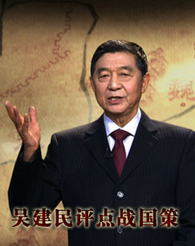
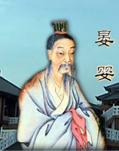
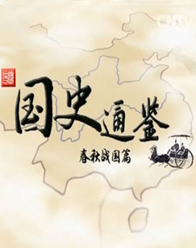
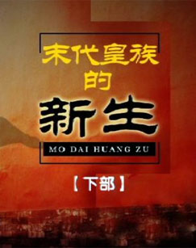

百家讲坛 国史通鉴_第一部
介绍：
达尔文说人是猴子变的，从云南元谋到北京周口，中国人是怎么进化的呢？上下五千年中华文明的源头又在哪里？

百家讲坛 大宋谜案
介绍：
公元960年正月初一，一个叫赵匡胤的后周将领率军北上抵御契丹的进攻，大军行至陈桥驿，发生了令人意想不到的戏剧性的一幕，睡梦中的赵匡胤被众将领叫醒，稀里糊涂地就被披上了黄袍，拥立为帝。结束了五代十国的乱世，开创了历时三百余年的大宋王朝。

百家讲坛 发现上官婉儿
介绍：

百家讲坛 百家姓_第二部
介绍：

百家讲坛 崇祯那些年_第一部
介绍：

百家讲坛 《诗经》中的不老爱情
介绍：
《诗经》诞生于两千多年前，是我国的第一部诗歌总集，它的一些作品，对今天的很多人来说，显得有些晦涩难懂，但《诗经》中也有一些脍炙人口的诗歌，比如它开篇的第一首诗《关雎》，里面有些句子大家都耳熟能详...

百家讲坛 崇祯那些年_第二部
介绍：
崇祯皇帝倾尽全力，调兵遣将，对李自成的部队围追堵截，终于，在一次猛烈的交锋之后，李自成几乎全军覆没，仅剩下18个人，逃进了商洛山。而农民军另外一位首领张献忠也投降了明军，正当崇祯皇帝想要喘口气的时候...

百家讲坛 大唐英雄传
介绍：
一千多年前，他们曾影响到中国的进程，他们纵横捭阖，叱诧风云，以热血、激情、智慧谱写了一曲大唐英雄谱。尉迟敬德、李靖、秦琼、程咬金、长孙无忌、张九龄、郭子仪、李光弼……他们或者在建国战争中冲锋陷阵，破敌建功...

百家讲坛 吴建民评点战国策
介绍：
《战国策》以记叙战国时期谋臣策士，纵横捭阖的外交斗争，为主要内容，西汉末年的经学家文学家刘向，根据前人的记录考订整理后，最终把这本书，定名为《战国策》。战国时代是我国历史上，绝无仅有的璀璨瑰丽的文明黄金时期...
百家讲坛 刘备的谋略
介绍：
从一个卖鞋的草根到三分天下的霸主，刘备如何完成人生的蜕变？在窝囊爱哭的刘皇叔形象背后，又隐藏着他哪些不为人知的大智慧？北京邮电大学赵玉平教授风趣说三国，为您解读一个与传统形象不一样的刘备。还原历史，启迪人生。

百家讲坛 清十二帝后宫疑案
介绍：
每个人都拥有自己的家，帝王也不例外，中国古代皇城的后宫就是帝王的家。正是中国历史上这一最大的特殊家庭，左右着千千万万个普通家庭乃至整个国家的命运。对于古人来说，“齐家”一直被当作“治国平天下”的基础，那么，帝王们究竟怎样经营他们自己的家庭呢...

百家讲坛 名相晏婴
介绍：
春秋时期的晏婴，是后世人们心目中智慧的化身，他的智慧充满幽默与灵动，发生在晏婴身上的，“晏子使楚”“挂牛头卖马肉”“二桃杀三士”等故事，至今广为流传...

百家讲坛 风云唐太宗_上
介绍：
在中国历史上大大小小的盛世之中，要说最没有争议的，非唐朝莫属。唐朝是中国历史上当之无愧的盛世，那么这个盛世的奠基人就是唐太宗李世民，是他引领大唐的历史向一个后人无法企及的高度发展。唐太宗在当时被推为“天可汗”，意思是天下的盟主...

百家讲坛 成败论乾隆_下
介绍：
说到乾隆帝，说到乾隆盛世，很容易想到的就是六下江南，在诸多的清宫戏中，或是说乾隆帝关心民生疾苦，常常带一两个随从，就下江南微服私访，或是说乾隆帝身世扑朔迷离，之所以要六下江南，就是要寻找自己的亲生父母...
百家讲坛 姜鹏品读《资治通鉴》
介绍：
一部历时19载编成的用人识人宝典，刘邦、项羽在用人上具有怎样的高下立判？商鞅这位帮助秦国强大的人才，为什么却给自己引来了杀身之祸？司马光眼中的用人识人秘诀，究竟具有怎样的现实启迪？

百家讲坛 司马光_第二部
介绍：
公元1051年，32岁的司马光进入馆阁，成为大宋朝的高级官员，并担任了礼部的重要职务，就在他刚刚任职不久，就遇到一个非常蹊跷的事件，而这个事件与11年前爆发的一场战争有关...

百家讲坛 王立群读宋史第二部_宋太宗_下
介绍：
宋太宗是大宋王朝的第二位皇帝，他身为宋太祖赵匡胤之弟，不合情理的继位使他在历史上留下了许多令人不解的疑团。他在位21年间，富国强兵，除了继承宋太祖文人政治，延续中国文治盛事，还积极扩张领土，使用政治压力迫使吴越王钱和割据漳、泉二州的陈洪进纳土归附...

百家讲坛 国史通鉴_春秋战国篇
介绍：

百家讲坛 三国名将_曹操
介绍：
曹操（155年－220年3月15日），字孟德，一名吉利，小字阿瞒，沛国谯县（今安徽亳州）人，汉族。东汉末年杰出的政治家、军事家、文学家、书法家。三国中曹魏政权的缔造者，以汉天子的名义征讨四方，对内消灭二袁、吕布、刘表、韩遂等割据势力...

百家讲坛 三国名将_诸葛亮
介绍：
他是朝廷的行政首脑丞相，性质原本属于文臣；但是他又掌控了全国的军权，指挥千军万马南征北伐，实际上是全军总司令。这位就是诸葛亮。诸葛亮是政治家，也是军事家。诸葛亮最初是一个甚么样的人？他为何会在襄阳呆了12个年头之久...

百家讲坛 三国名将_邓艾
介绍：
他把蜀汉政权一举灭，是对三国走向统一的巨大促进；他是孤苦贫穷的农村放牛娃，却能凭借自己的努力，成为战果辉煌的一代名将。这位就是曹魏极具个性色彩，但是又有杰出军事才能的名将邓艾。那么邓艾是一个甚么样的人...

百家讲坛 六大古都
介绍：
中国六大古都有：北京、南京、杭州、开封、洛阳、西安。这里曾汇聚物华天宝，历经沧桑；这里让中华民族的文明薪火，世代传承，走近六大古都，触摸历史痕迹，寻找前行动力。河南大学程遂营教授解读六大古都的前世今生。

百家讲坛 奇人王阳明
介绍：
中国历史上的一位奇人――王阳明，王阳明与贵州文化密切相关，他开创了心学一派，是和孔子、孟子、朱熹齐名的儒家圣人。而这位王阳明却从来与众不同，行为堪称另类。那么，王阳明在贵州经历了什么样的生活？他又怎样建立了赫赫军功

百家讲坛 王立群说成语
介绍：
成语，中国的语言精华，古人的智慧结晶！成语，故事引人入胜，语言凝练精美，内涵意味深长。品鉴成语，解读人生。王立群先生带您走进琳琅满目的成语宝库，和您一起含英咀华、溯本求源。
百家讲坛 解码汉字
介绍：
从三千多年的甲骨文到今天的方块字，中国汉字尽管一脉相承，但字形和字义却都发生了很大改变。那么，从夏、商、周，到元、明、清，这些耳熟能详的朝代名称，它们最初的含义是什么？又有着怎样的来历故事呢？

百家讲坛 郝万山说健康_第二部
介绍：
你会被情绪所左右吗，你能控制好自己的喜、怒、哀、乐吗，人情绪失控，会给我们的健康带来哪些危害，怎样做才能调控好自己的情绪，郝医生会有哪些好建议...
百家讲坛 朱棣身后那些事儿
介绍：
永乐皇帝朱棣夺位成功之后，大明政坛蹊跷事频发：才子被杀！政变疑云！遗诏之谜！这一桩桩历史大案的背后，究竟暗藏着怎样的玄机？关于继承人的争夺更加扑朔迷离！惊心动魄的较量中，谁会是最后的赢家？在朱棣离世之后，大明历史又将发生哪些惊天巨变？
百家讲坛 《红楼梦》丝绸密码
介绍：
贾宝玉的孔雀裘披风、潇湘馆的霞影纱、王熙凤的五彩刻丝石青银鼠褂，这些看似与故事主线无关的情节，如何暗示了《红楼梦》四大家族的真实身份？ 江宁织造的天衣无缝、苏州织造的通经断纬、杭州织造的薄如蝉翼，生产御用丝绸的江南三织造，如何隐藏于《红楼梦》的字里行间？

百家讲坛 末代皇族的新生_下
介绍：
皇帝的悲与喜；贝勒的苦与乐；皇妹的泪与笑；皇子的祸与福； 御前出丑，末代皇叔载涛当年究竟是怎样一种心态，刚被特赦，末代皇帝溥仪为什么要举报皇叔载涛谋反，溥杰该如何应对哥哥的多疑，回望渐行渐远的那段历史，揭秘晚清皇族的艰难新生。
百家讲坛 三国名将_曹操(重播，跳转至首播页面)
介绍：
曹操（155年－220年3月15日），字孟德，一名吉利，小字阿瞒，沛国谯县（今安徽亳州）人，汉族。东汉末年杰出的政治家、军事家、文学家、书法家。三国中曹魏政权的缔造者，以汉天子的名义征讨四方，对内消灭二袁、吕布、刘表、韩遂等割据势力...
百家讲坛 三国名将_诸葛亮(重播，跳转至首播页面)
介绍：
他是朝廷的行政首脑丞相，性质原本属于文臣；但是他又掌控了全国的军权，指挥千军万马南征北伐，实际上是全军总司令。这位就是诸葛亮。诸葛亮是政治家，也是军事家。诸葛亮最初是一个甚么样的人？他为何会在襄阳呆了12个年头之久...
百家讲坛 甲午 甲午
介绍：
甲午战争，一场令中国人深感耻辱的战争，我们不禁要问，在总兵力明显高于侵略者的情况下，大清帝国的海陆军，为什么会节节败退？北洋海军当时号称亚洲第一强大的舰队，为什么如此不堪一击？在这场不期而遇的战争面前，战争的指挥者与参与者究竟有着怎样的表现？...

百家讲坛 马骏品读《孙子兵法》_第二部
介绍：
《孙子兵法》，它诞生于2500年前的春秋时代，是中国现存最早的兵书，也是世界上最早的军事著作，被誉为“兵书之首”、“兵学圣典”；它虽然只有短短的六千字左右，却蕴含了极为深刻的谋略与智慧；它不仅是历代军事家用于指导战争实践的必读之书...